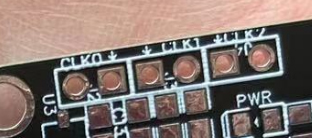
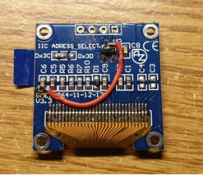
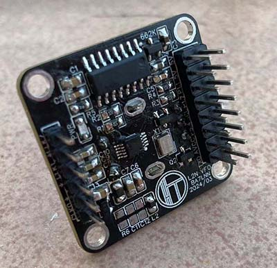
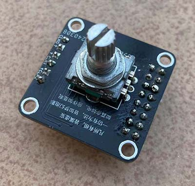
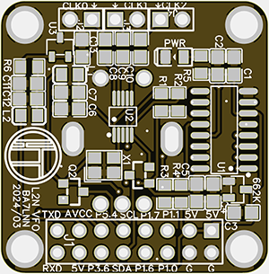
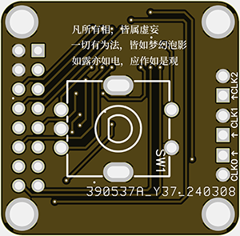

BA7LNN @ Radio Amateurs
L2N VFO MINI
功能概要：
- → 支持USB/LSB/CW/FT8
- → 中频8MHz
- → 1206屏幕/OLED 0.96 Inch(12864 SSD1306)
- → 8051单片机
- → Si5351(SILICON LABS)/MS5351(国产)
- → 硬件开源资料，软件代码因写的丑不开源


参数：
- → 频率范围： 30k-80Mhz
- → 只有一个中频8MHz
- → 步进：10,100,1K,10K,1M
- → 输出：-6~~8dbm
- → 供电压：5V, 板载LDO: 662K
常用电子元件：
- → 场管：2N7002, 用于5V与3.3V上SDA, SCL电平转换, SOT23
- → 电容：104，102电容, 滤波, 0805封装
- → 电阻: 4.7K, 2.2K, 100,1K, 10k 3.3k 0805封装
- → 电感：100nh,或68nh,用于2.5V基准电压 0805封装
- → LED灯，SMD 0805封装
- → TL431, 用于ADC 2.5V参考电压
- → LDO: 3.3V我常用两种:(1)ASM1117-3.3 SOT23封装 (2)662K,
5V： LM7805 TO-92封装 - → 25MHZ TCXO, 3225封装 (淘宝购买地址)
- → TL431, 用于ADC 2.5V参考电压
- → 单、双排针
- → SMA, IPEX 1.0V同轴连器
- → PH2.0 DIP座
引脚功能概要
- → P3.6 ：PTT输出引脚，当手咪按下时，此时引脚低电位， 屏幕“R”字样变为“T”表 示由接收状态进入发射。
- → P5.4 ：波段选择，用于驱动继电器，选择7m或是14m
- → P1.6 ：SWR_F, 驻波输入正向功率
- → P1.7 ：SWR_R, 驻波输入反向功率
- → P1.0：输出引脚, 处在cw模式时，此时引脚低电位， 屏幕“CW”字样
- → P1.1：接收与发射切换引脚
- → RXD ：P3.0, UART RXD引脚
- → TXD ：P3.1, UART TXD引脚
- → SCL(P3.2) ： I2C时钟引脚，这里用于OLED屏
- → SDA(P3.3) ： I2C数据引脚，这里用于OLED屏
- → AVCC和5V ,使用跳线连接两个引脚时，启用ADC,经TL431后2.5V精准采样电压
- → 5V，GND(两路)， 一个输入供电，另一个用于OLED输出
- → P3.5 ：EC11编码器A向
- → P3.7 ：EC11编码器B向
- → P3.4 ：EC11编码器按键
频率输出:
- → CLK0: 输出中频：8M或9M
- → CLK2: 输出中频：8M或9M
- → CLK1: 输出VFO

注：每个CLKx 旁边均有GND引脚，需注意有箭头处为频率出脚, 如上图所注
安装硬件:
- → 按照引脚功能，连接主板，通电前检查： 是否为5V供电、
频率校准:
Si5351本身安装的25MHz TCXO(封装格式为3225), 根据Si5351芯片数据手册也可换成27MHz TCXO, 只需要3脚电压输入，4脚频率输出即可。安装各屏幕后，长按进入选项1-1，XTAL，即可进行校准，这里以25MHZ为例。
在进入25mhz校准模式下，CLK0, CLK1, CLK2均输出10MHz频率。
这里你可以使用频率计测量上面CLK0输入， 假如： 9.9999734MHZ, 即可你需要校正的25MHz应改为：24999933MHZ即可。
计算公式：
10.000 000 mhz 你需要的频率。
9.999 734 * 25 000 000 / 10 000 000 = 24 999 933
注意： TCXO需要运行一段时间，等温度稳定才行
关于屏幕
- → 1、屏幕使用的是OLED 1306, 0.96或是1.3英寸均可。
- → 2、关于屏幕干扰短波，说是屏幕的电荷泵，常用两种方
- → (1)在VCC上串联色环电感330mH,再并联470uF电容到GND
- → (2)直接拆除C3, C4电容，再加一跳线如下图

实际此方法下屏亮度有所降低，但不影响使用。
资料
- → Schematic 原理图PDF
- → (固件1 1206屏)L2N VFO MINI(HEX) 4按钮
- → (固件2 OLED屏)L2N VFO MINI(HEX)
- → L2N VFO MINI 使用手册
- 主控MCU: STC12C5A60S2-45I-LQFP44
- → STC12C5数据手册
- 频率芯片: SI5351A-GTR
- → Si5351 AN619开手册PDF
图片集




联系方式
- → Mobile: +86 137 2586 0789
- → Email: ba7lnn@foxmail.com
© 2023.01-2025.03. BA7LNN . All rights reserved.